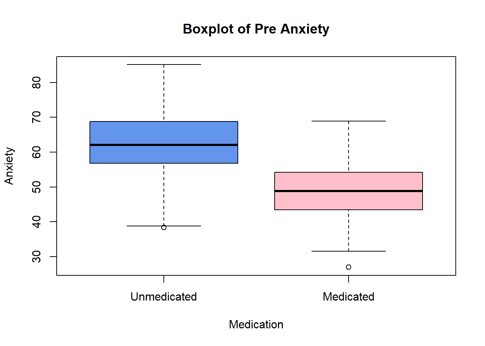
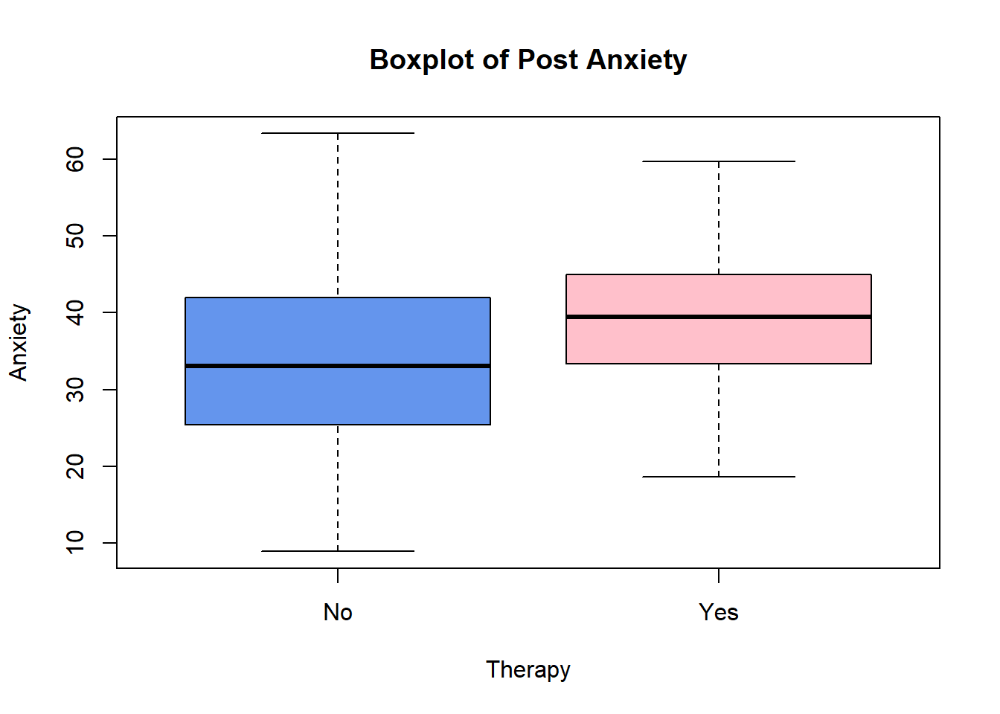
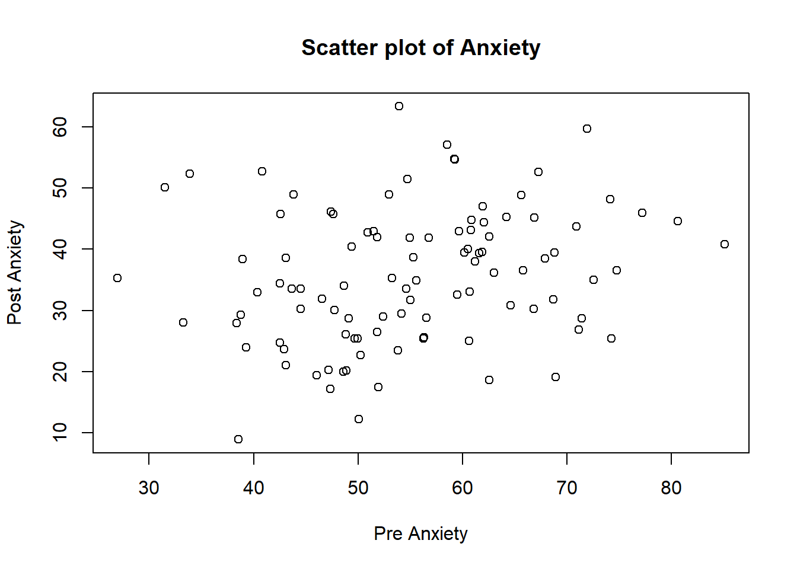
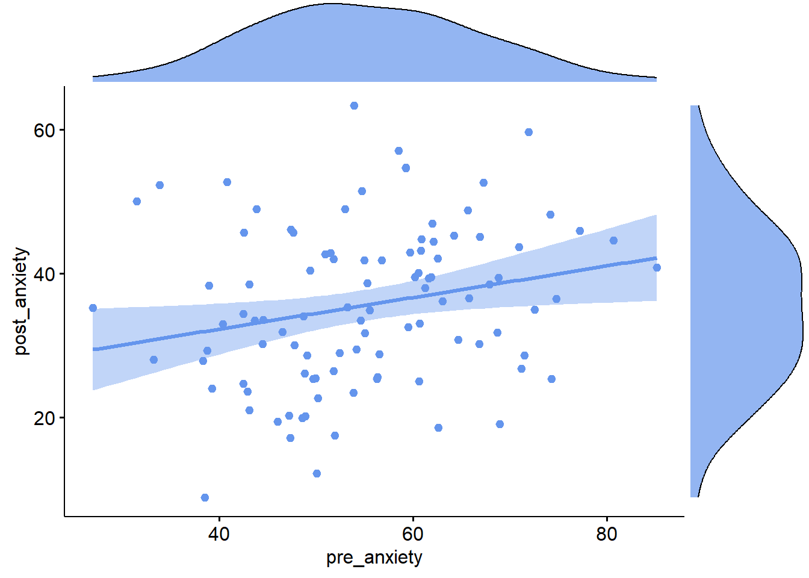
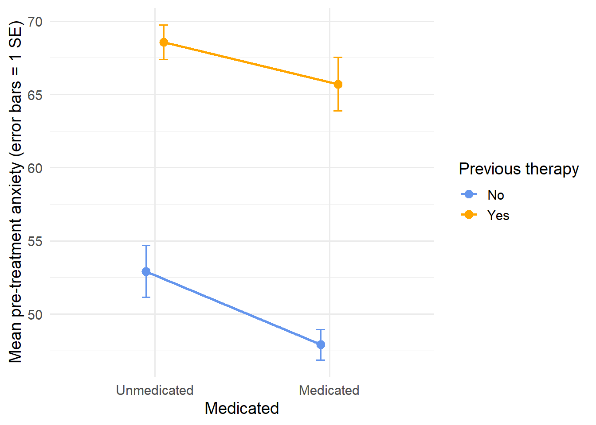

df <- read.csv("AnxietyPrePostData.csv")PS71020_Unit3_Lab
A Review of Basic Statistical Tests
Learning Outcomes:
1 - Use RStudio to perform t-tests and assumption checks
2 - Use RStudio to produce scatter plots and perform correlations
3 - Use RStudio to perform ANOVAs and post-hoc tests
4 - Learn the standard way of reporting the results of these statistical tests and extracting the values from RStudio output
Materials Used:
We will use the packages tidyr, car, rstatix, ggpubr and psych, these are already installed on the RStudio Server but if you are working on your own Laptop you may need to install it.
NoteSome general notes about the weekly labs
You should go through the worksheet during the lab and try to complete as much of it during the lab as you can. You can work on the sheet individually or in small groups during the lab. Try to answer the lab worksheet questions in your own words however. If you are unable to finish the worksheet during the class, try to finish it outside class time. Try to attempt the answer before using the ‘Show Answer’ button.
As you go through the sheet, copy the relevant lines of code to your own analysis script.
A complete model answers script will be available on the VLE page from Fridays after the labs so you can check your own answers.
If you have any queries during the class, please feel free to ask your lab tutors. If your question relates specifically to the lecture content or the homework sheets, please contact Peter Holland by email or use the forum on the VLE page.*
SECTION A. THE DATA SET
These data include 100 patients with generalized anxiety disorder who took part in a therapeutic intervention to reduce anxiety. As you will see, we have basic demographic information on these patients: age
gender: 0 = female, 1 = unreported, 2 = male
whether they are currently taking medication (medicated): 0 = Unmedicated, 1 = Medicated
whether they have previously undergone therapy (previous_therapy): 0 = No, 1 = Yes
Finally, we have our principal measures of interest: anxiety prior to treatment (pre_anxiety) and after treatment (post_anxiety).
Anxiety scores range from 0 to 100 with higher scores reflecting greater anxiety.
The researchers were interested in variables related to baseline anxiety (i.e. pre_anxiety), whether treatment reduced anxiety.
As we have done in previous labs we first read the data and store it as a variable, called df in this case:
Then we properly specify our factors and their levels:
df$gender <- factor(df$gender, levels = c(0,1,2), labels = c("female","unreported","male"))
df$previous_therapy <- factor(df$previous_therapy, levels = c(0,1), labels = c("No","Yes"))
df$medicated <- factor(df$medicated, levels = c(0,1), labels = c("Unmedicated","Medicated"))Finally we can get a quick summary to check if things look ok:
summary(df) id age gender medicated
Min. : 1.00 Min. :19.73 female :40 Unmedicated:45
1st Qu.: 25.75 1st Qu.:25.78 unreported:20 Medicated :55
Median : 50.50 Median :29.12 male :40
Mean : 50.50 Mean :29.55
3rd Qu.: 75.25 3rd Qu.:32.70
Max. :100.00 Max. :40.56
previous_therapy pre_anxiety post_anxiety
No :69 Min. :26.96 Min. : 8.903
Yes:31 1st Qu.:47.40 1st Qu.:27.635
Median :54.66 Median :35.117
Mean :55.08 Mean :35.616
3rd Qu.:62.20 3rd Qu.:43.316
Max. :85.09 Max. :63.363 SECTION B. T-TESTS
Before testing there predictions, it would be valuable to know if the baseline anxiety scores are normally distributed, as is assumed by most statistical tests.
The function used to do a Shapiro Wilk test in R is shapiro.test(). What code would you need to run this on the pre_anxiety variable?
shapiro.test(df$pre_anxiety)
Perform the Shapiro-Wilk test.
Looking at the Shapiro-Wilk test do you have any concerns? What other steps should we take to assess normality?
Hint: Section C from Lab 2
The test is not significant with p = 0.98, so this does not suggest any concerns. However, we should also visualise the distribution of our data and also check skewness and kurtosis values.
What potential issue have we missed by testing the normality of the variable as a whole when our planned analysis is based on two groups?
If we had a large difference in means between the groups this could potentially cause a bimodal distribution. Instead we should test the normality of each group separately. Here is the code to do this: by(df$pre_anxiety, df$medicated, shapiro.test)
See This Section from Presessional 2 for some more information on using the by() function.
In this case if you run the code you will see that both groups show normally distributed data.
The researchers expected that the patients who were medicated would have lower baseline anxiety. Below is the code to get descriptive statistics by group, create a boxplot, and perform an independent samples t-test in RStudio:
library(psych)
boxplot(pre_anxiety ~ medicated, df, main = "Boxplot of Pre Anxiety", xlab = "Medication", ylab = "Anxiety", col = c("cornflowerblue","pink"))
describeBy(pre_anxiety ~ medicated, data = df)
Descriptive statistics by group
medicated: Unmedicated
vars n mean sd median trimmed mad min max range skew
pre_anxiety 1 45 62.66 10.1 62.08 63.09 9.79 38.35 85.09 46.74 -0.36
kurtosis se
pre_anxiety 0.17 1.51
------------------------------------------------------------
medicated: Medicated
vars n mean sd median trimmed mad min max range skew
pre_anxiety 1 55 48.88 8.43 48.82 49.01 8.46 26.96 68.91 41.95 -0.11
kurtosis se
pre_anxiety 0.06 1.14t.test(pre_anxiety ~ medicated, data = df, var.equal = TRUE)
Two Sample t-test
data: pre_anxiety by medicated
t = 7.4403, df = 98, p-value = 3.887e-11
alternative hypothesis: true difference in means between group Unmedicated and group Medicated is not equal to 0
95 percent confidence interval:
10.10729 17.46004
sample estimates:
mean in group Unmedicated mean in group Medicated
62.65919 48.87552 Was the prediction supported? What were the results? Write them out in standard format.
Yes. The medicated group exhibited lower anxiety scores at baseline (M=48.88, SD=8.43) than the unmedicated group (M=62.66, SD=10.10), t(98)=7.44, p<.001.
The code above uses a formula object to define the relationship we want to examine, you can find more information on this in Tutorial 2. In a formula object the dependent (or outcome) variables go on the left hand side of the ~ symbol and the independent variables (or predictors) go on the right hand side. So the formula pre_anxiety ~ medicated specifies that we want to examine how pre_anxiety varies by medicated.
The input argument var.equal = TRUE performs the version of the t-test that assumes homogeneity of variances. However, we should first check that this is actually true (if it wasn’t we could use a Welch t-test).
What information do we already have that suggests that this assumption might not be violated in this data? What test would we use to formally confirm this?
The standard deviations of the two groups are relatively similar: The medicated group (SD=8.43) The unmedicated group (SD=10.10)
Also the boxplots have similar whisker sizes. However, these aren’t not direct measures of variance so be wary of relying on them for this purpose (see week 2 lecture for what they represent).
Levene’s test is the test for homogeneity of variance.
The function to test this is called leveneTest() and it is found in the car package. It takes the same form of input arguments as the describeBy() and t.test() functions above.
What are the two lines of code you would need to use to load the package and perform the test? Run these lines and you should get the output shown below. Does this result suggest that we have met the homogeneity of variances assumption?
Loading required package: carData
Attaching package: 'car'The following object is masked from 'package:psych':
logitLevene's Test for Homogeneity of Variance (center = median)
Df F value Pr(>F)
group 1 1.0278 0.3132
98
library(car) leveneTest(pre_anxiety ~ medicated, data = df)
The test is not significant, p = 0.31, this means that the assumption was not violated and we were justified in running a standard student’s t-test instead of the Welch t-test.
The final thing we should also include is a measure of effect size. There are different functions to do this in different R packages. However, the package rstatix contains a lot of other useful statistics functions so we will use this throughout. Below is the code needed to load the package and compute Cohen’s D (the measure of effect size for t-tests).
library(rstatix)
Attaching package: 'rstatix'The following object is masked from 'package:stats':
filtercohens_d(df, pre_anxiety ~ medicated, var.equal = TRUE)# A tibble: 1 × 7
.y. group1 group2 effsize n1 n2 magnitude
* <chr> <chr> <chr> <dbl> <int> <int> <ord>
1 pre_anxiety Unmedicated Medicated 1.50 45 55 large You now have the complete code to run an independent samples t-test after checking it’s assumptions.
Try to write your own code using this as a guide to run the appropriate independent samples t-test to test post_anxiety differs based on the previous_therapy factor. The outputs your code should produce are shown below:
library(psych)
library(car)
library(rstatix) # since we have loaded these packages already
#this is not strictly necessary but it is good practice to
#put all the library() calls at the top of the script.`
myFormula <- post_anxiety ~ previous_therapy # as we will use this multiple times we can define it`
by(df$post_anxiety, df$previous_therapy, shapiro.test) #check normality of both groups
leveneTest(myFormula,data = df) # check homogeneity of variance`
#create a boxplot
boxplot(myFormula, df, main = "Boxplot of Post Anxiety", xlab = "Therapy", ylab = "Anxiety", col = c("cornflowerblue","pink"))
#get descriptive statistics by group
describeBy(myFormula, data = df)
#perform the t-test
t.test(myFormula, data = df, var.equal = TRUE) #use equal variances as levene's mot significant`
cohens_d(df, myFormula, var.equal = TRUE)df$previous_therapy: No
Shapiro-Wilk normality test
data: dd[x, ]
W = 0.98494, p-value = 0.5755
------------------------------------------------------------
df$previous_therapy: Yes
Shapiro-Wilk normality test
data: dd[x, ]
W = 0.97508, p-value = 0.6671Levene's Test for Homogeneity of Variance (center = median)
Df F value Pr(>F)
group 1 2.1105 0.1495
98 
Descriptive statistics by group
previous_therapy: No
vars n mean sd median trimmed mad min max range skew
post_anxiety 1 69 34.17 11.47 33.04 33.82 11.86 8.9 63.36 54.46 0.29
kurtosis se
post_anxiety -0.46 1.38
------------------------------------------------------------
previous_therapy: Yes
vars n mean sd median trimmed mad min max range skew
post_anxiety 1 31 38.83 9.31 39.42 39.18 8.51 18.63 59.7 41.07 -0.28
kurtosis se
post_anxiety -0.2 1.67
Two Sample t-test
data: post_anxiety by previous_therapy
t = -1.987, df = 98, p-value = 0.04972
alternative hypothesis: true difference in means between group No and group Yes is not equal to 0
95 percent confidence interval:
-9.318826224 -0.005853199
sample estimates:
mean in group No mean in group Yes
34.17062 38.83296 # A tibble: 1 × 7
.y. group1 group2 effsize n1 n2 magnitude
* <chr> <chr> <chr> <dbl> <int> <int> <ord>
1 post_anxiety No Yes -0.430 69 31 small How would you write the results out in the standard format for a report?
Prior to analysis, assumptions were checked. Shapiro-Wilk tests indicated that post-treatment anxiety scores did not depart significantly from normality in either the no-therapy group (W = .98, p = .576) or the previous-therapy group (W = .98, p = .667), and Levene’s test indicated homogeneity of variance, F(1, 98) = 2.11, p = .150. An independent samples t-test (equal variances assumed) showed that post-treatment anxiety was significantly lower for participants with no previous therapy (M = 34.17, SD = 11.47) than for those with previous therapy (M = 38.83, SD = 9.31), t(98) = −1.99, p = .050, d = −0.43. This corresponds to a small effect.
SECTION C. PAIRED SAMPLES T-TEST AND CORRELATION
We can also check if there is a relationship between pre and post anxiety and if these values changed after the intervention.
The first thing we can do is to create a scatter plot of the two variables. The simplest way to do this using the base R function plot:
plot(df$pre_anxiety,df$post_anxiety, xlab = "Pre Anxiety", ylab = "Post Anxiety", main = "Scatter plot of Anxiety")
However, it is nicer to use the combined plots shown in the lecture that can be created with the ggpubr package. You can find the code for creating one of these here: Week 2 Homework 2. Try to modify that code to produce the plot shown below:
Warning: package 'ggpubr' was built under R version 4.2.3Loading required package: ggplot2
Attaching package: 'ggplot2'The following objects are masked from 'package:psych':
%+%, alphaWarning: The `size` argument of `element_line()` is deprecated as of ggplot2 3.4.0.
ℹ Please use the `linewidth` argument instead.
ℹ The deprecated feature was likely used in the ggpubr package.
Please report the issue at <https://github.com/kassambara/ggpubr/issues>.Warning: The `size` argument of `element_rect()` is deprecated as of ggplot2 3.4.0.
ℹ Please use the `linewidth` argument instead.
ℹ The deprecated feature was likely used in the ggpubr package.
Please report the issue at <https://github.com/kassambara/ggpubr/issues>.
Does the plot suggest that there is a relationship between pre and post intervention anxiety levels? What else does the plot suggest about the assumptions of a correlation?
Yes, it looks like there is a small positive correlation between the two variables. Also we can see from the histograms on the margins that both variables appear to be normally distributed, there appears to be a linear relationship, and the relationship appears to be homoscedastic.
We can now perform a correlation to check if this relationship is statistically significant. The function to perform a correlation in R is cor.test().
Look at the help for this function to see if you can produce the following result and then write the results up in a standard format.
Pearson's product-moment correlation
data: df$pre_anxiety and df$post_anxiety
t = 2.3281, df = 98, p-value = 0.02196
alternative hypothesis: true correlation is not equal to 0
95 percent confidence interval:
0.03403658 0.40703987
sample estimates:
cor
0.2289243
The code is: cor.test(df$pre_anxiety,df$post_anxiety)
A simple write up would be: A Pearson correlation showed a significant, weak positive relationship between pre-treatment anxiety and post-treatment anxiety, r(98) = .23, p = .022. Participants with higher pre-treatment anxiety tended to have higher post-treatment anxiety.
We have found that there is a relationship between pre and post anxiety levels. However, we should check statistically whether the intervention significantly affected anxiety. One way to do this in base R would be to use the following code:
t.test(df$pre_anxiety, df$post_anxiety, paired = TRUE)
Paired t-test
data: df$pre_anxiety and df$post_anxiety
t = 13.936, df = 99, p-value < 2.2e-16
alternative hypothesis: true mean difference is not equal to 0
95 percent confidence interval:
16.69126 22.23320
sample estimates:
mean difference
19.46223 However, for calculating effect size measures and for more complex statistical designs we are going to use the rstatix package. Most of the functions in the rstatix package are designed to work with long format dataframes. Currently, our data is in a wide format with each row representing one participant and each column representing different bits of data about that participant.
Below is the code to transform our data into long format. Take some time to read through the code and comments and examine the df_long dataframe to understand what has changed about how the data is arranged.
library(tidyr) #this package include the pivot_ functions we need
#change to long format,
df_long <- pivot_longer(df,
cols = c(pre_anxiety, post_anxiety), #using these old columns
names_to = "time", #this is the new column to hold the factor names
values_to = "anxiety") #this is the new column to hold the values
# make sure each participant's two scores line up
df_long <- df_long[order(df_long$id, df_long$time), ] # use your participant ID columnWe can now use the same formula style input as we did for the independent samples t-test to perform a paired samples t-test and get the Cohen’s D value. We just need to tell both functions that this is paired data, we do this with an input argument of paired = TRUE.
If we want to test the effect of time on anxiety, what is the formula we would use?
pairedFormula <- anxiety ~ time
Here is the code to perform the t-test and calculate Cohen’s D:
t.test(pairedFormula, df_long, paired = TRUE)
Paired t-test
data: anxiety by time
t = -13.936, df = 99, p-value < 2.2e-16
alternative hypothesis: true mean difference is not equal to 0
95 percent confidence interval:
-22.23320 -16.69126
sample estimates:
mean difference
-19.46223 cohens_d(df_long, pairedFormula, paired = TRUE)# A tibble: 1 × 7
.y. group1 group2 effsize n1 n2 magnitude
* <chr> <chr> <chr> <dbl> <int> <int> <ord>
1 anxiety post_anxiety pre_anxiety -1.39 100 100 large SECTION D. ANOVAs
Previously using t-tests we tested if either the medicated variable or the previous_therapy variable affected the pre_anxiety variable when considered alone. However, we can use an ANOVA to examine if the effects of factors interact.
What is the common way of describing an ANOVA like this?
This would commonly be called a 2x2 between subjects ANOVA, since we have 2 levels to both of our IVs.
When using a formula object we list our IVs on the right hand side of the ~ symbol. If we use the formula pre_anxiety ~ medicated + previous_therapy, this would ask for the main effects of both IVs but it would not estimate the interaction effect. To specify an interaction between two IVs we place the : between them. So the formula for both main effects and their interaction would be: pre_anxiety ~ medicated + previous_therapy + medicated:previous_therapy.
To perform an ANOVA with this formula we use the aov() function. This Because we want to use the output of this to summarise and calculate effect sizes we want to assign this output to a variable. Below is the code to do this and to get a summary of the ANOVA results:
#perform the anova and assign the output to an object called mdl
mdl <- aov(pre_anxiety ~ medicated + previous_therapy + medicated:previous_therapy, data = df)
#summarise the mdl
summary(mdl) Df Sum Sq Mean Sq F value Pr(>F)
medicated 1 4702 4702 93.426 7.77e-16 ***
previous_therapy 1 3482 3482 69.188 6.01e-13 ***
medicated:previous_therapy 1 10 10 0.204 0.652
Residuals 96 4832 50
---
Signif. codes: 0 '***' 0.001 '**' 0.01 '*' 0.05 '.' 0.1 ' ' 1Do either of the IVs have a significant main effect? Is the interaction significant?
Both IVs have a significant main effect (p < 0.001), however the interaction is not significant (p = 0.652).
We can use the code below to create an interaction plot of this data.
# Interaction plot
pd <- position_dodge(width = 0.2)
ggplot(df, aes(x = medicated, y = pre_anxiety,
colour = previous_therapy, group = previous_therapy)) +
stat_summary(fun.data = mean_se, geom = "errorbar", width = 0.1, position = pd) +
stat_summary(fun = mean, geom = "line", linewidth = 1, position = pd) +
stat_summary(fun = mean, geom = "point", size = 3, position = pd) +
scale_colour_manual(values = c("cornflowerblue", "orange")) +
labs(x = "Medicated", y = "Mean pre-treatment anxiety (error bars = 1 SE)",
colour = "Previous therapy") +
theme_minimal(base_size = 14)
Does the plot match the results of the statistical test?
Yes, the main effect of Previous Therapy is clear with the orange line consistently higher than the blue line. The Main effect of Medicated is clear as both lines point down to the right indicating a decrease of Anxiety with medication. Finally the non-significant interaction matches as both the lines are close to parallel.
The final thing we should do is to add some effect size measures. For ANOVAs this is eta2 and partial eta2. There are two functions from the rstatix package that we can use to calculate these, for a ANOVA with more than one IV it is more common to report partial eta2:
partial_eta_squared(mdl) medicated previous_therapy
0.493205510 0.418843377
medicated:previous_therapy
0.002125058 Write the results of the ANOVA in the way you would for a report:
A 2 (medicated) × 2 (previous therapy) between-subjects ANOVA was conducted on pre-treatment anxiety. There was a significant main effect of medication status, F(1, 96) = 93.43, p < .001, partial η² = .49 , and a significant main effect of previous therapy, F(1, 96) = 69.19, p < .001, partial η² = .42. The interaction between medication status and previous therapy was not significant, F(1, 96) = 0.20, p = .652, partial η² = .002. The effect of each factor on pre-treatment anxiety therefore did not depend on the level of the other.